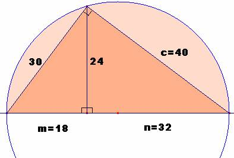

Para el aula
Problema 283.-
Un cateto de un triángulo rectángulo mide
Lazcano, I. Barolo, P. (1991): Matemáticas 7º EGB. Edelvives. Zaragoza
(pag 165)
Solución
de F. Damián Aranda Ballesteros, profesor del IES Blas Infante de Córdoba,
España.
Usaremos el teorema del cateto y de la altura para resolver este ejercicio. Sea para ello
|
 |
|
|
|
2.- m∙n = 242; 18∙n
= 242; n= 3.- c2 = 242 + 322
; c= 4.- Área = 1/2∙30∙40 = 600 cm2 |